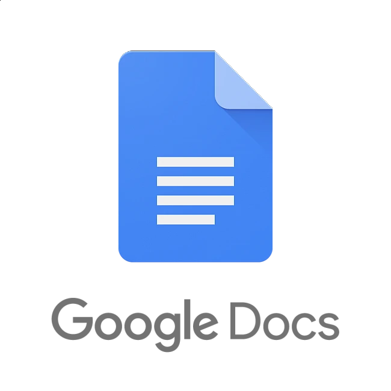

Om temaet
Tema 1 var mit første møde med Multimediedesignuddannelsen. Her lærte jeg både mine medstuderende at kende og fik en introduktion til de værktøjer og arbejdsmetoder, vi kommer til at bruge gennem uddannelsen. Vi arbejdede med kreativ problemløsning, gruppearbejde og de første digitale værktøjer som Figma, GitHub og ItsLearning.
Værktøjer

